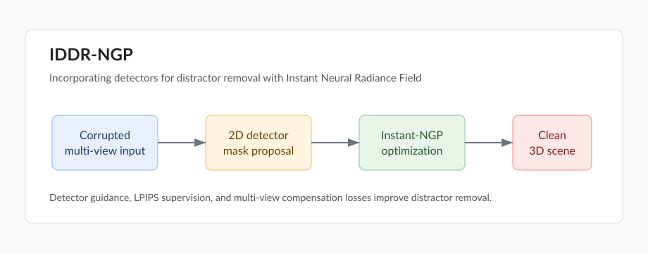

IDDR-NGP: Incorporating Detectors for Distractor Removal with Instant Neural Radiance Field
ACM Multimedia 2023, Oral, CCF-A
Xianliang Huang, Jiajie Gou, Shuhang Chen, Zhizhou Zhong, Jihong Guan, Shuigeng Zhou
Paper arXiv Code pending Video pending

Overview
IDDR-NGP removes visual distractors from 3D scenes by combining 2D detectors with Instant-NGP. The method targets snowflakes, confetti, defoliation, petals, and other scene-level corruptions that appear across multi-view captures.
Highlights
- Detector-guided distractor localization for multi-view corrupted inputs.
- End-to-end optimization in an implicit 3D representation.
- LPIPS and multi-view compensation losses for consistent restoration.
- Benchmark data with synthetic and real-world distractors.
Citation
@inproceedings{huang2023iddrngp,
title={IDDR-NGP: Incorporating Detectors for Distractor Removal with Instant Neural Radiance Field},
author={Huang, Xianliang and Gou, Jiajie and Chen, Shuhang and Zhong, Zhizhou and Guan, Jihong and Zhou, Shuigeng},
booktitle={Proceedings of the 31st ACM International Conference on Multimedia},
pages={1343--1351},
year={2023}
}